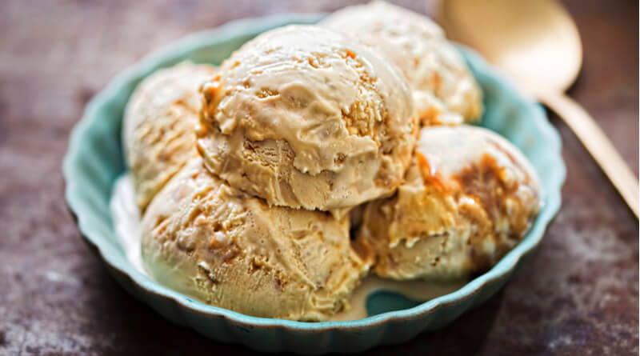

| Image |
Flavor |
Description |
 |
Vanilla |
Vanilla is the classic everyone loves! It’s smooth, creamy, and goes well with almost anything. You can enjoy it plain, with a slice of cake, or topped with caramel sauce. Simple, sweet, and timeless, that’s what makes vanilla the world’s favorite flavor. Try it in versions like French Vanilla or Vanilla Bean! |
 |
Chocolate |
Rich, creamy, and satisfying, chocolate ice cream is a must-have for any dessert lover. Made from real cocoa or melted chocolate, it’s full of deep flavor and pairs perfectly with add-ons like cookies, candy, or peanut butter cups. There are also fun twists like dark chocolate, fudge, and choco-almond. |
 |
Strawberry |
Fresh, fruity, and full of flavor, strawberry ice cream has a sweet and slightly tangy taste that’s perfect for sunny days. It sometimes comes with real strawberry bits for extra goodness. Light and colorful, it’s a favorite for anyone who loves a cool, fruity treat. |
 |
Matcha |
Matcha is a smooth green tea flavor that started in Japan and is now loved around the world. Made from real matcha powder, it has a nice balance of earthy and sweet. It’s not too sugary and not too plain, making it perfect for those who like something calm and refreshing. |
|  |
Butterscotch |
Creamy, buttery, and full of caramel flavor, butterscotch ice cream tastes like a cozy homemade dessert. It’s sweet but not too heavy, and it’s even better with toffee bits or a drizzle of caramel on top. Every bite is a mix of comfort and sweetness. |
|
Cookies and Cream |
Cookies & Cream never goes out of style. It mixes creamy vanilla ice cream with crunchy chocolate cookie pieces for the best of both worlds. Smooth and crunchy at the same time, this flavor is a hit with both kids and adults. |
 |
Mint Chocolate Chip |
Cool, minty, and chocolatey, this flavor is a total classic. The mix of fresh mint ice cream and chocolate chips makes it super refreshing. Its green color and crisp taste make it perfect for cooling down or enjoying something fresh and fun. |
 |
Chocolate Chip Cookie Dough |
Who doesn’t love cookie dough? This flavor has chunks of sweet cookie dough and chocolate chips mixed into creamy ice cream. It’s fun, tasty, and feels like sneaking cookie dough straight from the bowl, but in a safe and delicious way. |
 |
Rocky Road |
Rocky Road is full of texture and flavor. It mixes chocolate ice cream with marshmallows and nuts for a chewy, crunchy, and creamy experience in every scoop. Each bite is exciting, which is why it’s been a favorite for so long. |
 |
Pistachio |
Smooth, nutty, and a little sweet, pistachio ice cream is a simple yet special treat. Its light green color and gentle flavor make it stand out from the rest. It’s great for anyone who wants something unique and not too sugary. |